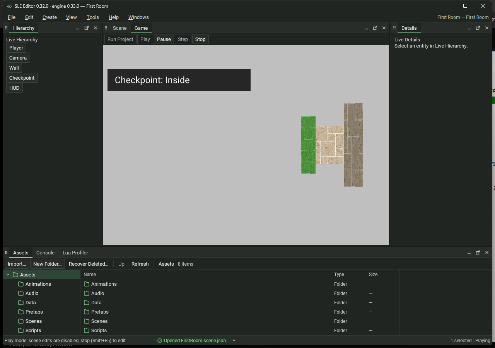

Add a wall, checkpoint, and HUD
Continue with the Player behaviour and input actions in First Room. Make each edit in the stopped scene and save before testing.
Give Player a physics body
Select Player and add RigidBody and BoxCollider in Details. Set Body Type to Dynamic, Gravity Scale to 0, and turn on Fixed Rotation. Give the collider size 64 × 64, centered at offset (0, 0). Keep both components enabled. Press Play, click Game, and hold D briefly. Player moves right and stops when you release the key. Stop to restore the starting position.
Build the wall
Create a Sprite at the scene root called Wall at (420, 135). Assign the same tile2.png texture as Player and set size to 32 × 140. Add a RigidBody with type Static and a BoxCollider of size 32 × 140 at zero offset. Keep Transform scale at (1, 1) so those dimensions match the drawn wall.
In Play, hold D until Player reaches Wall. The right edge of Player should stop against the left side of Wall, with Player's center near X 372. Hold A to move away. Solid contacts can also be observed with collision.begin and collision.end. See physics shapes and units.
For a round obstacle, add CircleCollider to a body and set its radius and offset. First Room uses the box shape to match its wall.
Create a checkpoint trigger
Create a root Sprite called Checkpoint at (345, 135). Assign tile2.png, set sprite size to 24 × 96, and set its render layer to -1 so Player draws over the marker. With Checkpoint selected, use Add Component to add BoxZone, the box event area. Verify its RigidBody is Static, set the zone size to 24 × 96 at zero offset, and replace the generated Zone ID with checkpoint.
Hold D in Play. Player should cross the marker and keep moving until it hits the wall. Move back with A. Console should report First Room: entered checkpoint and then First Room: left checkpoint. The box is a sensor, so its overlap produces zone.enter and zone.exit without blocking Player.
The script checks the event's zoneId and entityB so only Player's overlap with this checkpoint updates the HUD. See the events guide and the NPC Zone example.
Use a CircleZone and set its radius for a round trigger. Both zone shapes use the same enter and exit events.
Show the checkpoint state on screen
- Save the XML below as
Assets/UI/room-hud.xmlin First Room. Copy the checkout'sassets/fonts/Roboto-Regular.ttfinto the project, for example beside the XML. - Create a root Entity called HUD and add UI in Details. Browse to the XML for the layout and the copied font for the font asset. Set Space Mode to Screen, keep it visible, and leave the binding scope empty. Save the scene.
<Panel id="roomPanel" x="8" y="8" width="240" height="36" color="#101820CC">
<Label id="roomLabel" x="12" y="9" fontSize="18" color="#F7FBFF">Checkpoint: {{roomStatus}}</Label>
</Panel>Play should show Checkpoint: Outside near the top-left of Game. Move right into the checkpoint to see Inside, then left out of it to see Outside again. The Lua callbacks track whether Player is inside the checkpoint. Each update publishes that state to the label’s roomStatus binding. The bundled FPS HUD uses the same XML binding syntax.
